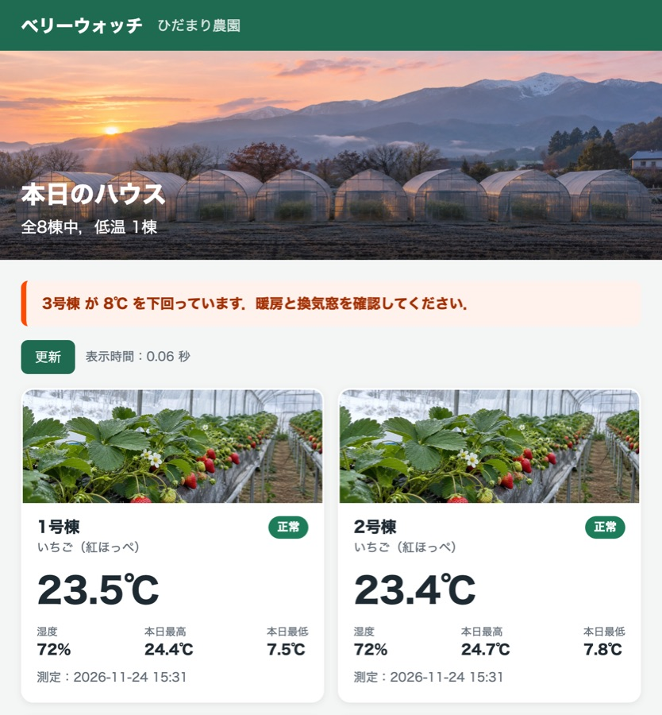
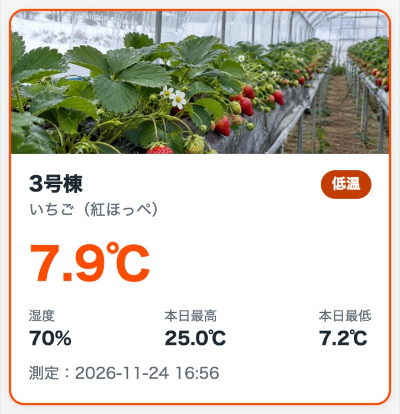

寒波まで，あと数日．
直して，本番に届ける
アプリの起動
VS Codeサーバーもセンサーも，VS Code の下のターミナルで
画面の見本（どこに打つ？）
▸ data
▸ static
app.py
sensor.py
名前@PC名:~/berry-watch$ python3 sensor.py 1号棟：10.2℃，75.3% を送信
bash
下のターミナル：1つ目＝サーバー，2つ目＝センサー（右の一覧で切り替え）
-
Ubuntu で実行 → VS Code が開く
cd ~/berry-watch && code . -
メニュー「ターミナル」→「新しいターミナル」（1つ目＝サーバー）
docker compose up -
ターミナル右上の ＋（2つ目＝センサー）
python3 sensor.py -
ブラウザで localhost:8000
うまくいかないとき
No such file or directory
→ アプリが未取得．第2回の「アプリの取得」から
左下に「WSL: Ubuntu」が出ない
→ VS Code を閉じて，1-1 をもう一度
permission denied（docker）→ メンターと確認
8棟の温度の表示
直す前を記録
ブラウザ「更新」を3回 → 表示時間．3号棟の温度・最高・最低も
表示時間が 1秒未満のとき
試験データが未作成．3つ目のターミナルで実行 → 2 から
docker compose exec app python sample_data.py表示時間と3号棟の値を記録
ブランチ＝わき道で作業
VS Codeわき道で直して確かめる → PR でお願い → 採用（Merge）で本道に合流
git switch main && git pullgit switch -c "fix-list-speed-$(git config user.name)"
VS Code の左下が fix-list-speed-…
読む量を減らす
VS Code日記の「今日のページ」だけを受け取る
左の一覧 → app.py → Ctrl + F →「def today」
-
house_id = ?の直後をクリック → 貼り付けAND measured_at >= ?前…WHERE house_id = ? ORDER BY id"後…WHERE house_id = ? AND measured_at >= ? ORDER BY id" -
「# 1.」の
#から，次の行の末尾))までをドラッグで選択 → 貼り付け# 1. この棟の本日の記録を取得する（古い順） today_rows = fetch_all(sql, (house_id, today))前# 1. この棟の全記録を取得する（古い順） rows = fetch_all(sql, (house_id,))後# 1. この棟の本日の記録を取得する（古い順） today_rows = fetch_all(sql, (house_id, today))黄色の枠が選ぶ範囲（行頭の空白は選ばない）
-
Ctrl + S（保存）
2か所を，上の「後」と同じに
いらない処理を消す
VS Code今日の分を自分で選ぶ6行は，もう不要
-
「# 2. 本日の記録だけを抽出する」の6行を選択 → Delete
前# 2. 本日の記録だけを抽出する today_rows = [] for row in rows: if row["measured_at"].startswith(today): today_rows.append(row) # 3. 本日の記録がなければ…データベースが今日の分だけ返すので，自分で選ぶ必要なし
-
残りのコメントの番号を詰める
「# 3.」→「# 2.」 「# 4.」→「# 3.」 「# 5.」→「# 4.」
-
Ctrl + S（保存）
直し終えた差分（ソース管理の表示と比べる）
@ app.py
today = datetime.now().strftime("%Y-%m-%d")
- sql = "SELECT measured_at, temperature, humidity FROM readings WHERE house_id = ? ORDER BY id"
+ sql = "SELECT measured_at, temperature, humidity FROM readings WHERE house_id = ? AND measured_at >= ? ORDER BY id"
- # 1. この棟の全記録を取得する（古い順）
- rows = fetch_all(sql, (house_id,))
+ # 1. この棟の本日の記録を取得する（古い順）
+ today_rows = fetch_all(sql, (house_id, today))
- # 2. 本日の記録だけを抽出する
- today_rows = []
- for row in rows:
- if row["measured_at"].startswith(today):
- today_rows.append(row)
-
- # 3. 本日の記録がなければ「記録なし」を返す
+ # 2. 本日の記録がなければ「記録なし」を返す
@ （中略）
- # 4. 最新の記録と，本日の最高・最低を求める
+ # 3. 最新の記録と，本日の最高・最低を求める
@ （中略）
- # 5. 集計結果を返す
+ # 4. 集計結果を返す
ソース管理（左端の上から3つ目）→ app.py で同じ表示
一覧を「更新」→ 温度が出れば OK（出ない → 差分と見比べる）
ソース管理の差分が，上の差分と一致
索引を追加
VS Code-
左の一覧 →
schema.sql -
readings の定義の終わり
);のすぐ下の空行をクリック → 貼り付け → Ctrl + S-- 索引．棟と日時で，記録をすぐ探せるようにする CREATE INDEX IF NOT EXISTS readings_house_time ON readings (house_id, measured_at);後humidity REAL NOT NULL -- 湿度（%）); -- 索引．棟と日時で，記録をすぐ探せるようにするCREATE INDEX IF NOT EXISTS readings_house_time ON …; -- 初期データ（棟）
上の「後」と同じ並び（前後に空行）
受入基準で確認
VS Codeサーバーのターミナルで Ctrl + C →
docker compose up再起動は必須．付箋（索引）は起動のときに作る
直した後の表示時間は？
「更新」を3回 → 表示時間．3号棟の値も


豆知識｜付箋だけでは速くならない
先輩の Mac での実測（この試験データ・8棟分）：直す前 0.85秒／付箋だけ 1.19秒／今日だけ 0.37秒／両方 0.005秒
付箋で3号棟は開けても，1年分を全部読むのは同じ
受入基準を満たす・3号棟の値が同じ
記録して，提案する
VS Code GitHub-
変更を記録（コミット）
git commit -am "一覧の高速化：本日の記録だけを読み，棟と日時の索引を追加" -
チームのリポジトリに送信
git push -u origin HEAD -
Pull request の作成ブラウザ
github.com/{team}/pulls → 黄色の帯の「Compare & pull request」
fix-list-speed-名前 had recent pushes Compare & pull request本文に下の型をコピーして埋める → 「Create pull request」
## 変更 - 一覧の要求で，本日の記録だけを読む - 棟と日時の索引を追加 ## 確かめたこと - 表示時間：〇秒 → 〇秒（自分の PC・3回） - 3号棟の温度・最高・最低：直す前と同じ Closes #1Closes #1：取り込むと Issue #1 も完了に（番号は相談の Issue）
自分の Pull request が Open（緑）
採用と本番
- 3つを見比べて1つを採用（Merge）．合図が出たら 9-2 へ
ほかは Close．同じ変更の練習なので，不採用は失敗ではない
git switch main && git pull- 本番に反映．URL が届いたらスマホで
本番が速い・連絡を記入
今日の分だけ集計
2段で：① 今日の記録を選ぶ → ② 選んだ中から最高・最低
問1 今日の記録の数
1行目は今日の日付．今日の記録の数を出力
11-24 3 11-23 5.0 11-24 9.0 11-24 7.5
2
ヒント
record["date"] == today のときだけ数を増やす
解答例
問2 本日の最高と最低
1行目は今日の日付．記録のうち今日の分だけで，最高と最低を1行ずつ出力．
今日の記録がなければ 記録なし．for は1回だけ
11-24 4 11-23 5.0 11-24 9.0 11-24 7.5 11-24 12.0
12.0 7.5
ヒント
最初の値がないので，highest = None から始める
今日の記録で，highest is None（まだない）か，より大きければ更新
解答例
問1 が全問正解（問2 は続き）
手応えメモ
このブラウザに保存．第11回で並べる
3つとも記入
 第8回 完了
第8回 完了
寒波の前に届けた
- ブランチ＝わき道
- 日記の今日のページだけ＋付箋
- Pull request と本番への反映
終了
各ターミナルで Ctrl + C → VS Code・ブラウザを閉じる